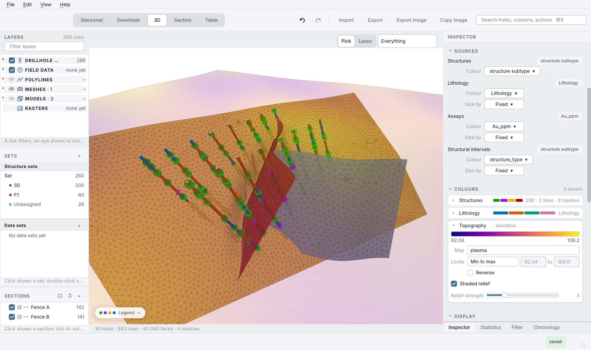
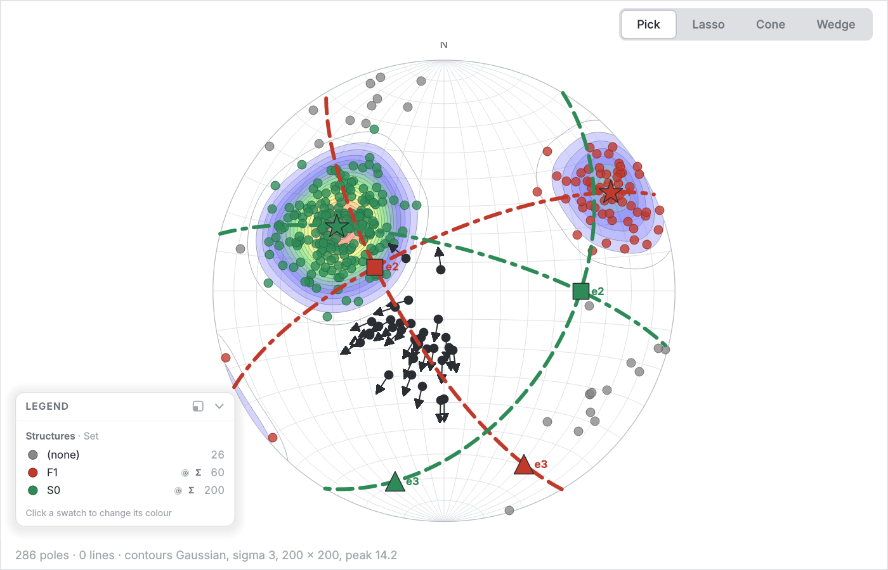
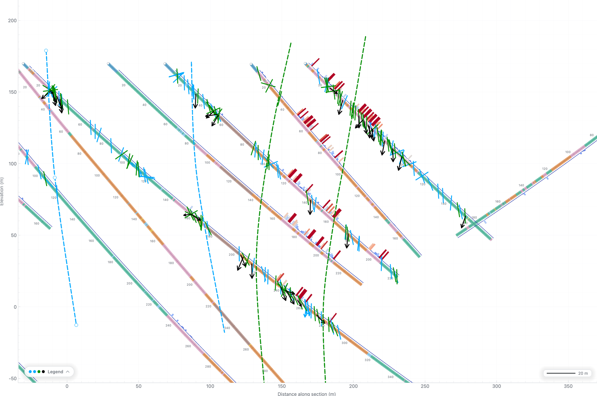
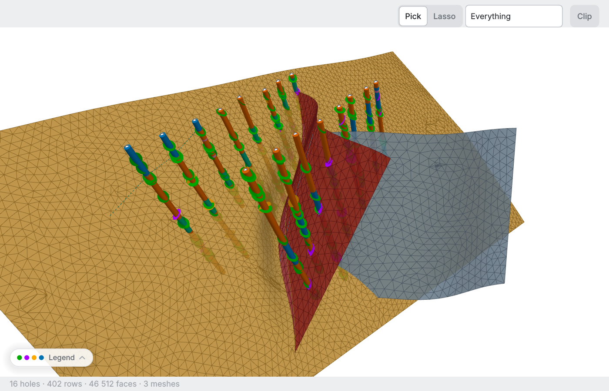
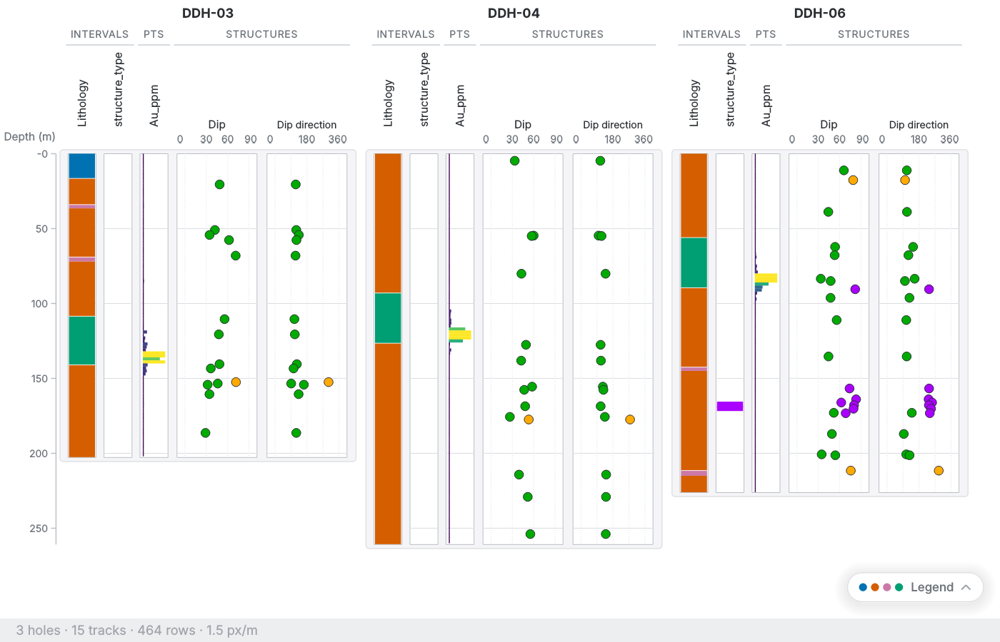
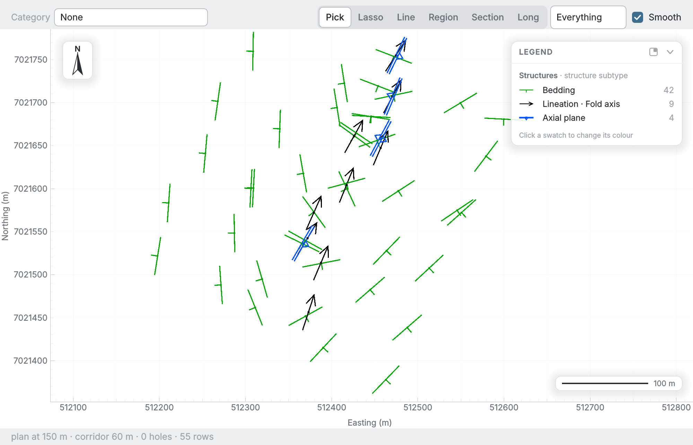
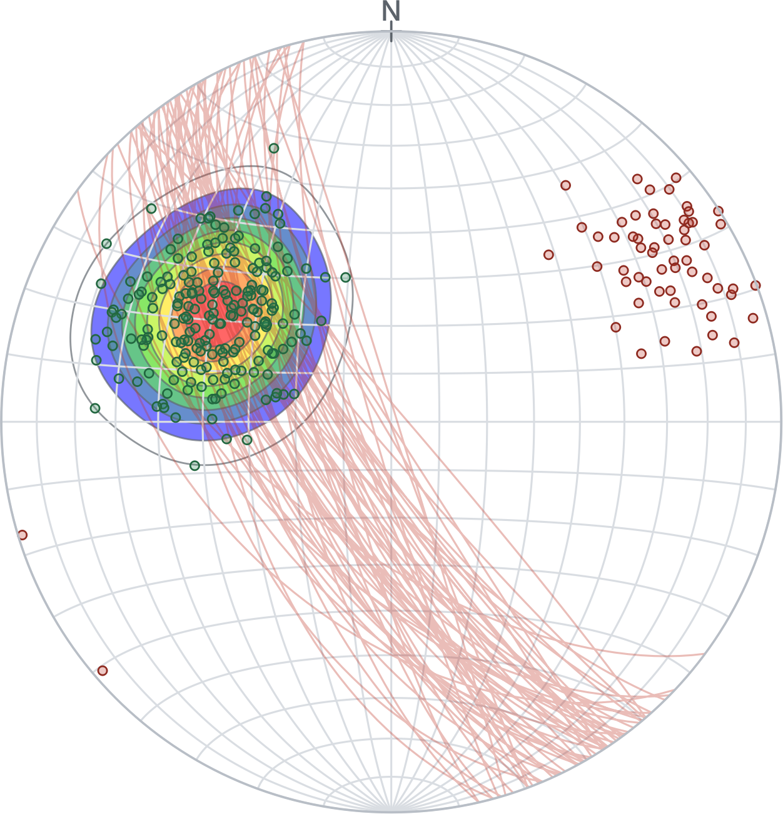

SGEO Studio is a desktop application for structural geology. Alpha, beta and gamma logged from oriented core become true orientations as they are typed and appear at once on the stereonet, in section, in 3D and on the downhole log, and the same measurements and contacts then build the surfaces, faults and bodies, ended at the topography and ordered by age.
macOS on Apple silicon and Windows 11, 64-bit. Every feature can be tried for fourteen days without an account or an internet connection.

Screenshot of SGEO Studio 2.1Planes are logged with alpha and beta, and lines either directly with alpha and beta or on a plane with gamma added, or true orientations and rake are typed as measured. Dip and dip direction, trend and plunge are computed as you type from the hole survey, desurveyed by minimum curvature, balanced tangential or tangential method.
A lower hemisphere equal area net with Kamb and Gaussian density contours, great circles, Terzaghi weighting, colouring by any column and sets drawn as polygons on the net. The orientation statistics cover Fisher and Bingham distributions, the eigenvector analysis with Woodcock and Vollmer parameters, and the results can be saved as analyses and compiled for every hole.
Vertical, plan and inclined sections with a corridor on either side of the plane, best fit sections through selected holes, structures drawn as ticks and arrows, and polylines and regions that can be traced, styled and exported to DXF.
Polylines drawn on sections and plans are extruded or lofted into surfaces, planes and contacts are fitted through measurements, form surfaces follow the logged orientations, and bodies are closed round logged intervals. In addition, every model keeps the recipe it was made from, so it is rebuilt whenever its lines or its data change.
An age matrix of the structure types decides which surface ends against which and which fault offsets what it cuts, with exceptions for single pairs. A fault of finite extent displaces the surfaces round it with a three dimensional displacement field that dies out towards its tip line, and the triangulations can be remeshed so that they meet exactly along the contacts, ready for a numerical code.
A digital elevation model or a triangulated surface serves as the ground, georeferenced rasters such as orthophotos, scanned maps and geophysical grids are imported from GeoTIFF or from an image with its world file and draped on it with polylines, and every model ends at the topography and at the model volume unless either limit is switched off. Meshes imported from Leapfrog and other programs are cut on every section and give signed distances, so that hanging wall and footwall sets can be assigned from them.
Desurveyed hole traces, plane discs with their poles, lineation arrows, interval tubes, point markers, models, meshes and draped rasters in one scene, with a clip plane drawn as a line across the view, shaded relief on the topography, a hover card on every feature and a maximum intensity projection of the assays.
Strip logs of several holes side by side on a shared depth axis, with interval, point and orientation tracks, value bars for assays and other numeric columns, and the same colours and filters as every other view.
Interval tables for lithology, alteration, RQD or assays and point tables sit beside the structures, and structures, intervals and polylines can be gathered into data sets from which models are built. User columns serve as filters, colour sources and set columns, a table of tens of thousands of rows stays responsive, and one hole can be made active for logging.
An import wizard for CSV and Excel files with column mapping and type checks, reloading of a file that has changed, and map linework from shapefiles and DXF files as polylines of the project. Every table is exported with its 3D coordinates, figures as PNG or SVG, polylines as DXF for Leapfrog or as shapefiles for a GIS, plans as georeferenced GeoTIFF or PNG with a world file, and figures for every hole in one batch.
Filters by hole, set, key observation or any column apply to every view at once, and structure types are ticked on and off per view. Sets are ordinary columns of the table, so they are exported, filtered and coloured like any other value.
Overprinting relations between structures are logged as they are observed and compiled into a deformation sequence with its diagram, the sequence proposes the age matrix of the model, and the model report sets out every surface with its data, its relations, its warnings and its audit against the holes.
Create a drillhole project and bring in the collars and surveys from CSV or Excel files through the import wizard. Existing structure files, whether with alpha and beta angles or with orientations measured by hand, are imported in the same way.
Type alpha, beta and gamma at the depth of each measurement. The true orientation appears at once, the pole is plotted on the net, and the structure is drawn in section, in 3D and on the log, so that a doubtful reading is caught while the core is still on the tray.
Define sets on the net, compare them between holes and against the modelled surfaces, and export the tables, figures and sections in the formats the rest of the project uses.
Trace the contacts and faults on the sections, extrude or loft them into surfaces, set the age order so that the faults cut and offset what is older than them, end everything at the topography, and remesh the set so that the surfaces meet along their contacts, ready for the geotechnical or resource model that follows.
A measurement selected in one view is highlighted in every other, and the filters, sets and colours are shared between them.

Stereonet
Section
3D view'">
Downhole log'">
Plan'">A stereonet project holds field measurements or any other orientation data without drillholes and gives the whole of the net: contouring, sets, statistics, filters, colouring by column and figure export. It never expires and needs no licence. Therefore it serves for teaching, for field mapping and for a quick look at any orientation data.

The trial starts at the first launch and needs no registration. When it ends, a drillhole project still opens for thirty days, read only, so that every view and every export keeps working and nothing is locked away, and after that a licence is needed to open it. A licence is a yearly subscription, and therefore every update released while it runs is included.
Free, for as long as you like
Per user and year, valid on up to two computers
Licences are issued by Structural Geology Company Oy as signed licence files and checked on your computer. For prices, site licences, renewals and academic use, write to sales@sgeo.fi. Problems with the application go to studio@sgeo.fi.